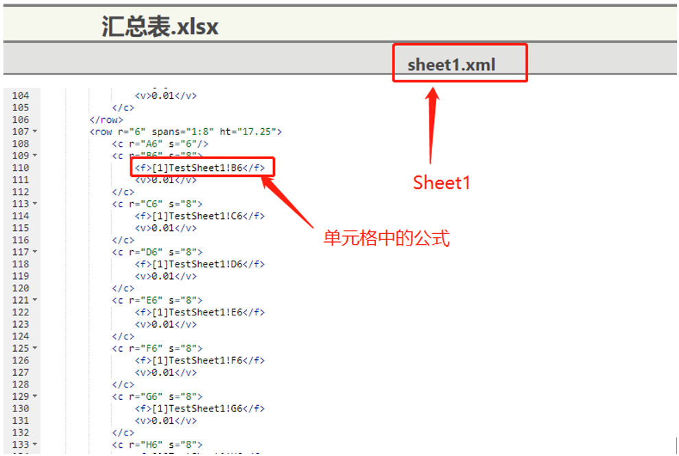
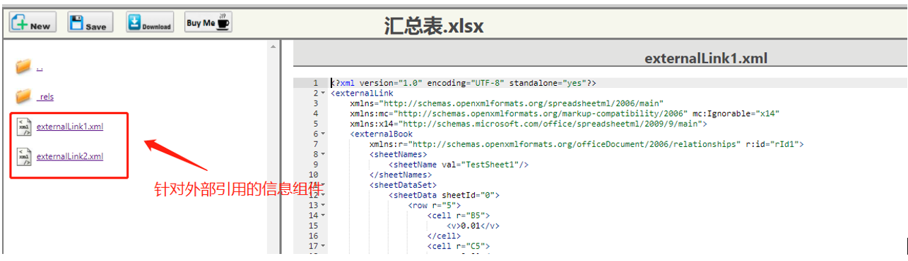

版主（博主曾任葡萄城技术社区SpreadJS板块版主）在日常沟通、技术社区等与使用SpreadJS的小伙伴们交流的过程中，遇到了很多前后端结合的问题。其实从定位来看，SpreadJS无论从技术架构，还是产品设计层面，都是纯前端的控件。但它毕竟最终还是要结合后端环境来开发部署和应用的，所以我有了写这篇文章的想法。
本文利用了一个比较贴近用户的前后端结合的示例工程，来给大家演示一下SpreadJS的一些使用场景和实现技巧，希望能够帮助大家打开思路，能够更好地解决业务问题，提升用户体验。
由于涉及的功能点较多，代码量也不小，这个主题我会分为两篇文章来发布，本篇文章是这个系列的第二篇。
实现思路：
本文是系列文章第二篇，主要讲解如何实现多屏协同数据关联（注意不是协同编辑）以及如何跨Workbook公式的解析、关联，本例采用了SpringBoot的WebSocket来实现页面终端的实时关联。
运行环境：
Java SpringBoot+ SpreadJS
运行方法：
解压后导入Eclipse（或其它IDE工具），Run Java Application ，访问localhost:8080即可。
建立Websocket服务关键代码讲解：
这段主要讲解前端JavaScript结合Java端如何建立Websocket服务，实现消息推送服务。如果对这方面比较精通的小伙伴，可以忽略，直接跳到下一小结。
Java实现部分：
1
2
3
4
5
6
7
8
9
10
11
12
13
14
15
16
17
18
19
20
21
22
23
24
25
26
27
28
29
30
31
32
33
34
35
36
37
38
39
40
41
42
43
44
45
46
47
48
49
50
51
52
53
54
55
56
57
58
59
60
61
62
63
64
65
66
67
68
69
70
71
72
73
74
75
76
77
78
79
80
81
82
83
84
85
86
87
88
89
90
91
92
93
94
95
96
97
98
99
100
101
102
103
104
105
106
107
108
109
110
111
112
113
114
115
116
117
118
119
120
121
122
123
124
125
126
127
128
129
130
131
132
133
134
135
136
137
138
139
140
141
142
143
144
145
146
|
public class SocketManager {
private static ConcurrentHashMap<String, WebSocketSession> manager = new ConcurrentHashMap<String, WebSocketSession>();
public static void add(String key, WebSocketSession webSocketSession) {
System.out.println("新添加webSocket连接 {"+key+"} ");
manager.put(key, webSocketSession);
}
public static void remove(String key) {
System.out.println("移除webSocket连接 {"+key+"} ");
manager.remove(key);
}
public static WebSocketSession get(String key) {
System.out.println("获取webSocket连接 {"+key+"}");
return manager.get(key);
}
}
@SuppressWarnings("deprecation")
@Configuration
@EnableWebSocketMessageBroker
public class WebSocketConfig extends AbstractWebSocketMessageBrokerConfigurer {
@Autowired
private WebSocketDecoratorFactory webSocketDecoratorFactory;
@Autowired
private PrincipalHandshakeHandler principalHandshakeHandler;
@Override
public void registerStompEndpoints(StompEndpointRegistry registry) {
registry.addEndpoint("/myUrl")
.setAllowedOrigins("*")
.setHandshakeHandler(principalHandshakeHandler)
.withSockJS();
}
@Override
public void configureMessageBroker(MessageBrokerRegistry registry) {
registry.enableSimpleBroker("/queue", "/topic");
registry.setUserDestinationPrefix("/user");
}
@Override
public void configureWebSocketTransport(WebSocketTransportRegistration registration) {
registration.addDecoratorFactory(webSocketDecoratorFactory);
super.configureWebSocketTransport(registration);
}
}
@Component
public class WebSocketDecoratorFactory implements WebSocketHandlerDecoratorFactory {
@Override
public WebSocketHandler decorate(WebSocketHandler handler) {
return new WebSocketHandlerDecorator(handler) {
@Override
public void afterConnectionEstablished(WebSocketSession session) throws Exception {
System.out.println("建立连接 sessionId = {"+session.getId()+"}");
Principal principal = session.getPrincipal();
if (principal != null) {
System.out.println("key = {"+principal.getName()+"} 存入");
SocketManager.add(principal.getName(), session);
}
super.afterConnectionEstablished(session);
}
@Override
public void afterConnectionClosed(WebSocketSession session, CloseStatus closeStatus) throws Exception {
System.out.println("退出连接 sessionId = {"+session.getId()+"}");
Principal principal = session.getPrincipal();
if (principal != null) {
SocketManager.remove(principal.getName());
}
super.afterConnectionClosed(session, closeStatus);
}
};
}
}
@Component
public class PrincipalHandshakeHandler extends DefaultHandshakeHandler {
@Override
protected Principal determineUser(ServerHttpRequest request, WebSocketHandler wsHandler, Map<String, Object> attributes) {
if (request instanceof ServletServerHttpRequest) {
ServletServerHttpRequest servletServerHttpRequest = (ServletServerHttpRequest) request;
HttpServletRequest httpRequest = servletServerHttpRequest.getServletRequest();
final String token = httpRequest.getParameter("token");
if (StringUtils.isEmpty(token)) {
return null;
}
return new Principal() {
@Override
public String getName() {
return token;
}
};
}
return null;
}
}
@MessageMapping("/sendToWorkbook")
@SendToUser("/queue/sendToWorkbook")
public void sendMyUser(@RequestBody Map<String, String> map) {
System.out.println("map = {"+map+"}");
WebSocketSession webSocketSession = SocketManager.get(map.get("referFile"));
if (webSocketSession != null) {
System.out.println("sessionId = {"+webSocketSession.getId()+"}");
template.convertAndSendToUser(map.get("referFile"), "/queue/sendUser", map.get("data"));
}
}
|
前端JavaScript实现部分：
1
2
3
4
5
6
7
8
9
10
11
12
13
14
15
16
17
18
19
20
21
22
23
24
25
26
27
28
29
30
31
32
33
34
35
36
37
38
|
var stompClient = null;
var host="http://localhost:8080";
function setConnected(connected) {
}
function connect(fileName) {
var socket = new SockJS(host+'/myUrl' + '?token='+fileName);
stompClient = Stomp.over(socket);
stompClient.connect({}, function(frame) {
setConnected(true);
stompClient.subscribe('/user/queue/sendUser', function(response) {
showResponse(response.body);
});
});
}
function disconnect() {
if (stompClient != null) {
stompClient.disconnect();
}
setConnected(false);
}
function send(referFile, data, isValued) {
data.isValued = isValued;
stompClient.send("/sendToWorkbook", {}, JSON.stringify({referFile: referFile, data: JSON.stringify(data) }));
}
function showResponse(response) {
console.log(response);
}
|
跨文档数据公式关联详解：
在Excel中，针对跨Workbook的公式引用，Excel对它们的处理和保存方式是：
1、在包含外部引用的单元格中，对引用目标以[int]的形式保存在sheet中；

2、每个[int]对应一个externalLink.xml的组件来描述。

SpreadJS由于runtime所限（JS语言本身不能实现引用文件等操作），无法兼容Excel的外部引用，因此无法读取和解析externalLink.xml的内容（这句只是官方解释，实际上读取、解析没问题，但最多只能做到保留这部分内容不丢失，无法实现实际功能，且还要考虑用户修改、与Excel中内容显示不一致、与其它公式嵌套引用等问题），只能拿到[int]的表达式。所以需要客户手动关联[int]与外部文件的引用关系。
以下重点讲解如何实现跨Workbook公式的引用（公式的计算SpreadJS有专用API，本例不做赘述）。
1
2
3
4
5
6
7
8
9
10
11
12
13
14
15
16
17
18
19
20
21
22
23
24
25
26
27
28
29
30
31
32
33
34
35
36
37
38
39
40
41
42
43
44
45
|
function showResponse(response) {
console.log(response);
if(!response){
console.log("收到Websocket空信息");
return;
}
var asyncDatas = JSON.parse(response);
var spread = GC.Spread.Sheets.findControl('ss');
spread.suspendCalcService(true);
spread.suspendPaint();
if(asyncDatas.isValued){
asyncDatas.formulas.forEach(function(d){
var sheet = spread.getSheetFromName(d.sheetName);
var formula = sheet.getFormula(d.row, d.col);
sheet.setTag(d.row, d.col, {formula: formula});
sheet.setFormula(d.row, d.col, null);
sheet.setValue(d.row, d.col, d.value);
});
var flg = true;
relations.forEach(function(r){
r.referFile == asyncDatas.referFile? flg=!flg: flg;
});
flg? relations.push(asyncDatas):false;
}else{
var formulas = asyncDatas.formulas;
formulas.forEach(function(f){
var formula = f.formula;
var sheetName = formula.split("!")[0];
sheetName = sheetName.substring(sheetName.indexOf("]")+1);
var sheet = spread.getSheetFromName(sheetName);
if(sheet){
var range = GC.Spread.Sheets.CalcEngine.formulaToRanges(sheet, formula, 0, 0)[0].ranges[0];
f.value = sheet.getValue(range.row, range.col);
}
console.log(f);
});
send(asyncDatas.loadedFile, asyncDatas, true);
}
spread.resumePaint();
spread.resumeCalcService(false);
}
|
完整Demo参考：
SpreadJS_SpringBoot.zip